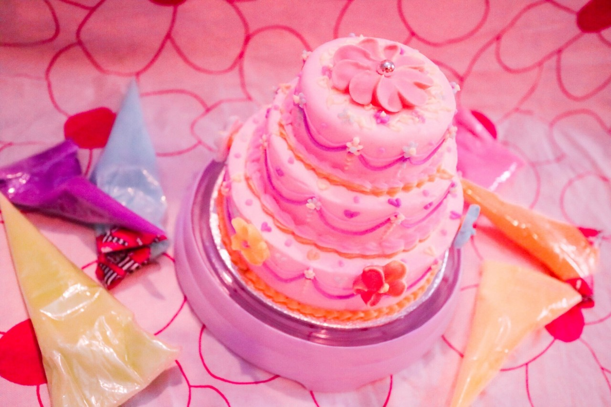
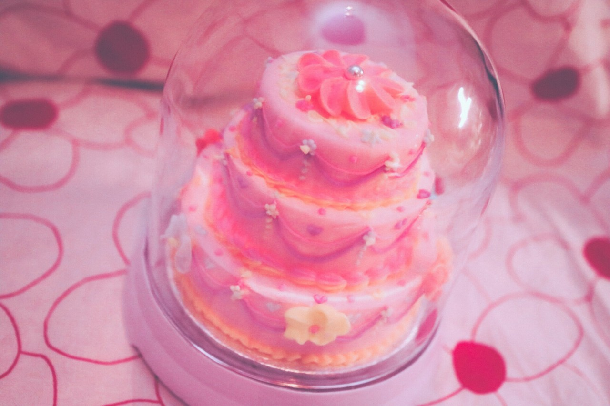

| 2017/04 03 Mon | 斎藤ちはる アイシング初挑戦 |
ちはるーむへようこそ
今日のちはるーむでは花見の準備、下見をして回りました。
今日は日本橋開通記念日です。
江戸時代から現代に至るまで
ずっと日本の道路交通の中心となっています。
江戸時代からずっとって凄いな〜
江戸時代の人も同じ日本橋を同じように通っていたってことだもんね、
なんか嬉しいな◎
☺︎ChihaBoom☺︎
不定期で私の好きなものや
好きなことに対して語るコーナーです
今年に募集して決まりました、
今日初登場のコーナー。
先日、スイーツアーティストである
KUNIKAさんのワークショップに参加してきたのです！
空きが出たとの情報を得て即応募しました( ¨̮ )
アイシングでシュガードームケーキを
デコレーションしていくという
ワークショップでした。
アイシングの書き方から
アイシングの絞り方から
描きやすい模様から
少しハイレベルな模様まで
何から何まで、
参加者一人一人に丁寧に教えてくださいました！
そして何より優しいヽ(；；)丿
本当に楽しかったですし
行って良かった！と心から思えました☺︎

初めてアイシングにチャレンジした私でしたが
KUNIKAさんのおかげで
何とか可愛らしいものが作れました＊
お気に入り♡
ケーキ本体部分の中身は発泡スチロールで出来ているので駄目になる心配がないので
ドーム型にしてお部屋に飾っています！

そしてKUNIKAさんと写真も撮って頂いちゃいましたヽ(；；)丿
私の思い出フォルダに入っています〜( ◦˙ ˙◦ )
素敵な思い出になりました＊
幸せな時間だったっ
楽しい時間はあっという間すぎて...
本当にありがとうございました！
いつかKUNIKAさんとお仕事でもご一緒出来ますように...
記念すべき第一回の
☺︎ChihaBoom☺︎コーナーは
大好きなKUNIKAさんでした◎
------------------------------------------------♡
♬ ChihaMusic
「空も飛べるはず」スピッツさん
今朝のめざましテレビで
新しいテーマソングを歌っていた
スピッツさん。
今日はスピッツさんにしようと決めていました
こんなに綺麗な声なのに
実はとってもキーが高くて高くて
歌うとびっくりします。
本当に素敵な声だなあ
"君と出会った奇跡が
この胸に溢れてる
きっと今は自由に空も飛べるはず"
気分が高揚して空も飛べそう！
って意味にも考えられるし
もう遠い空の場所に行ってしまった君は
自由に空も飛べているんだろうな。
っていう切ない意味にも考えられる。
深い歌詞が胸に刺さる。
今日もChihAnswer募集します！
お待ちしています☺︎
おやすみ
斎藤ちはる